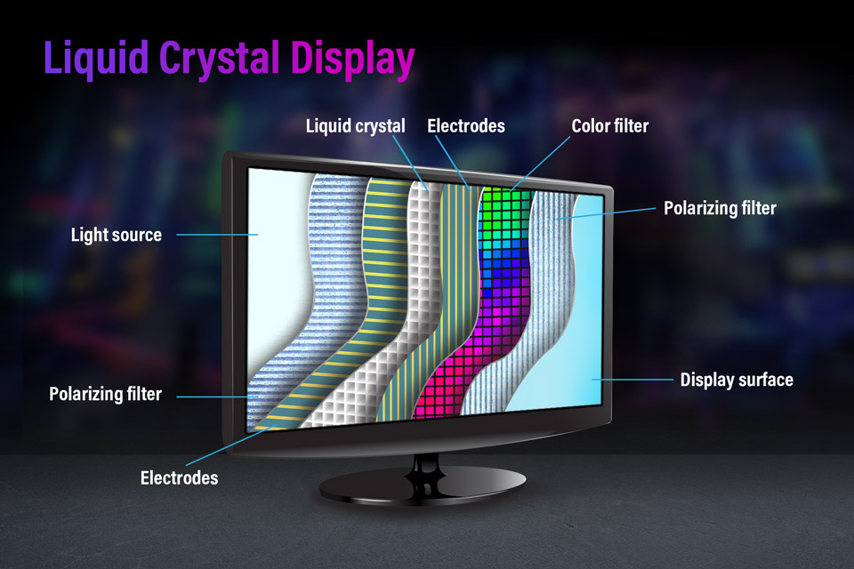
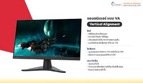

.jpg)
 |
 |
.png) |
 |
 |
| จอมอนิเตอร์(Monitor) | |
| ที่มา https://youtu.be/A57TGKA2FIs?feature=shared | |
| คำว่า “มอนิเตอร์” เราค้นหาตามสื่อต่างๆ หลักๆจะขึ้นมาให้เห็นว่าเป็นจอภาพ จอคอมพิวเตอร์ แต่มอนิเตอร์นี้ยังสามารถทำหน้าที่ได้หลายอย่าง ควบคุม ถ่ายทอดคุณภาพเสียงได้ดีด้วย อีกทั้งประเภทของการเชื่อมต่อ ในส่วนของสาย Port การเชื่อมต่อต่างๆ ก็มีรูปแบบการเลือกใช้งานที่แตกต่างกันออกไป ตามความเหมาะสม โดยทั้งนี้บางรุ่นก็ต้องดูในส่วนของ GPU (Graphics Processing Unit) ด้วย | |
|  | |
| Monitor หรือที่เรียกอีกอย่างว่า VDU ที่ย่อมาจาก Visual Display Unit เป็นอุปกรณ์คอมพิวเตอร์ซึ่งทำหน้าที่แสดงผลลัพธ์ที่ได้จากการประมวลผลของคอมพิวเตอร์ โดยรับข้อมูลแล้วแปลงออกมาเป็นสัญญาณภาพ ไม่ว่าจะเป็นภาพ ตัวอักษร ตัวเลข สัญลักษณ์ รวมไปถึงสีสันต่าง ๆ ด้วย ซึ่งผลลัพธ์ที่ถูกแสดงออกมานั้นจะเปลี่ยนแปลงไปตามข้อมูลที่คอมพิวเตอร์ได้รับนั่นเอง ในภาษาไทยคนจะนิยมเรียกว่า จอภาพ จอภาพ (Monitor) จอคอมพิวเตอร์เป็นอุปกรณ์แสดงผลที่มีชื่อเรียกมากมาย | ซึ่งเป็นเทคโนโลยีจอภาพในปัจจุบัน มีจอภาพแบบหลายรูปแบบ อย่างเช่น จอภาพแบบ Trinitron และ Flat Screen (จอแบน) ไม่ว่าจะเป็น CRT(monitor ทั่วไป) หรือ LCD (จอที่มีลักษณะแบนเรียบทั้งตัวเครื่อง) จอแต่ละประเภทจะมีประสิทธิภาพในการแสดงผลที่ต่างกันออกไปมากมาย เช่น จอแบนจะมีประสิทธิภาพ ในการแสดงผลมากกว่าจอปกติ เพราะสามารถลดแสดงสะท้อนได้ดี กว่าทำให้ไม่เกิดอาการเมื่อยล้า และปวดตา เมื่อต้องทำงานนานๆ แต่ราคาของจอแบนยังมีราคาสูงกว่าจอปกติพอสมควร |
|  | |
TN (Twisted Nematic)
|
VA (Vertical Alignment)
|